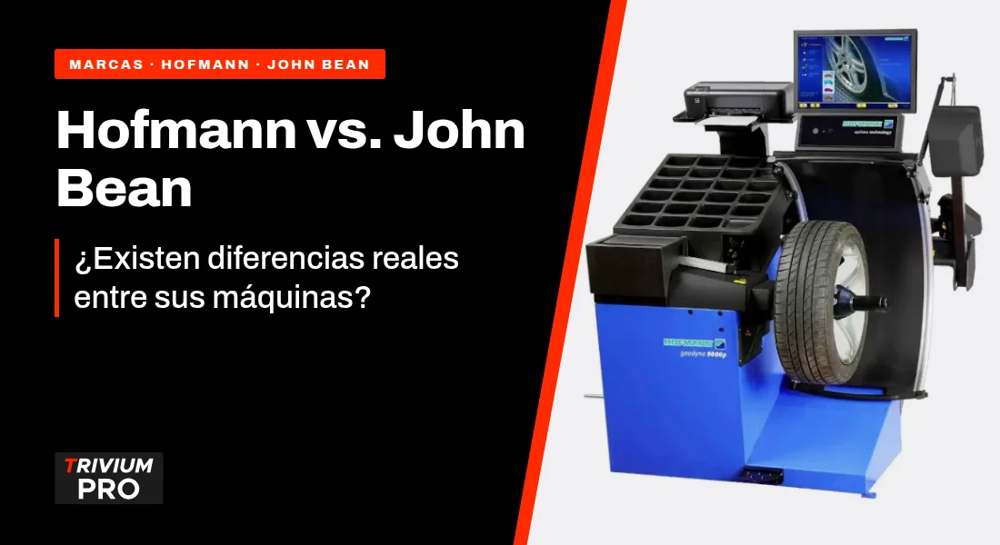

Aunque operan bajo marcas distintas, Hofmann y John Bean son parte de Snap-on Incorporated y comparten tecnologías y diseños en sus equipos. La principal diferencia radica en el posicionamiento de marca y el color de sus equipos: Hofmann utiliza el azul, mientras que John Bean se identifica con el rojo.
Hofmann: legado europeo y presencia global
Fundada en 1931, Hofmann es una marca de origen alemán con una sólida reputación en Europa. Su enfoque en la innovación y precisión la ha convertido en una opción preferida por fabricantes de automóviles y talleres en todo el mundo. En Argentina, Trivium Center S.A. es el importador oficial de Hofmann, distribuyendo sus productos en todo el país. Principalmente alineadoras, balanceadoras y desarmadoras.
Conclusión
No existe una diferencia en términos de calidad o funcionalidad entre Hofmann y John Bean. Ambas marcas ofrecen equipos de alta calidad respaldados por la experiencia de Snap-on. La elección entre una u otra puede depender de preferencias personales o de la disponibilidad en el mercado local. Sin embargo, para aquellos que valoran el legado y la reputación europea, Hofmann representa una opción destacada.